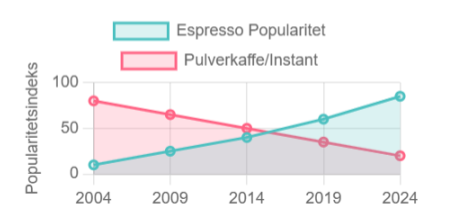

Nordmenns kjærlighet for kaffe er velkjent, og vi rangerer stadig
blant verdens største kaffeforbrukere. Hver nordmann konsumerer i
gjennomsnitt rundt 4–5 kopper om dagen, noe som tilsvarer omtrent
9–10 kilo kaffe per person årlig. Det plasserer Norge i toppsjiktet
globalt, kun slått av noen få andre nasjoner som Finland.
Kilde
Hva drikker vi? Tradisjonell filterkaffe troner fortsatt som
nordmenns favoritt. Enten det er morgenkaffen ved frokostbordet
eller en kopp med venner, har den en sentral plass i hverdagen. Men
trender har endret seg, og espressobaserte drikker som cappuccino,
latte og cortado er i sterk vekst, spesielt blant de yngre.
Kaffebarer har blitt samlingssteder for både studenter og
yrkesaktive, der baristaene skaper kunst i skummende melk og
serverer spesialkaffe fra små, uavhengige brennerier.
Statistikk viser at aldersgruppen 18–34 år har det største inntaket
av espressobaserte drikker, mens de over 50 holder fast ved den
klassiske filterkaffen. De siste årene har vi også sett et økt fokus
på bærekraft og sporbarhet. Mange foretrekker nå økologiske og
fairtrade-merkede kaffetyper, noe som reflekterer nordmenns voksende
miljøbevissthet.
Aldri
har vi vært mer opptatt av helse. Etter hvert som kaffens mange
positive helsemessige effekter ble kjent, mistet den stemplet som
en litt «farlig» drikk man burde nyte i begrensede mengder. Blant
kaffedrikkerne oppgir 88% at de tror kaffe har en positiv eller
nøytral effekt på helsetilstanden, og de fleste negative myter er
avlivet. Totalt i befolkningen er det kun 7% som tror den har en
negativ effekt.
Når det gjelder utviklingen over tid, har det totale kaffeforbruket
holdt seg stabilt høyt, men typen kaffe vi foretrekker, har endret
seg betydelig.

Kaffe er ikke bare en drikk, men en del av den norske kulturen – et
sosialt lim og en personlig vane som gir både trøst og energi i en
travel hverdag.